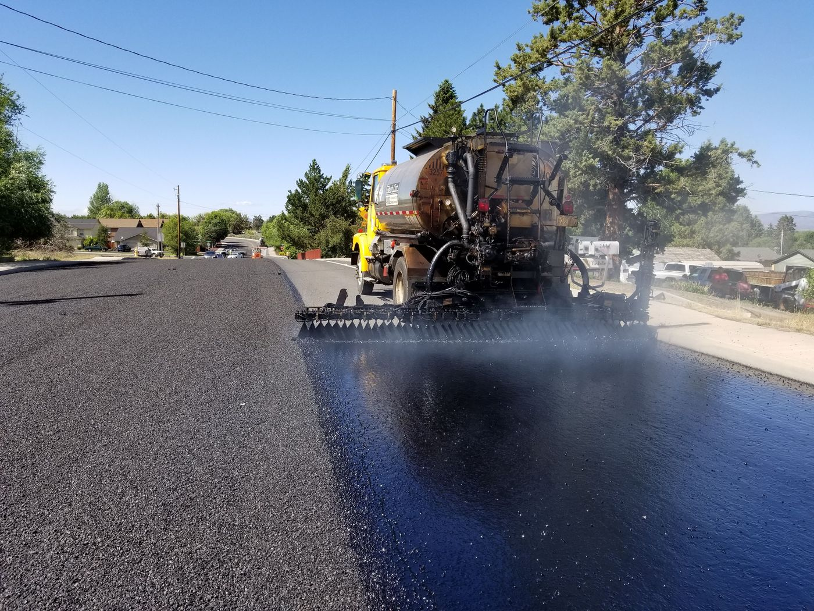
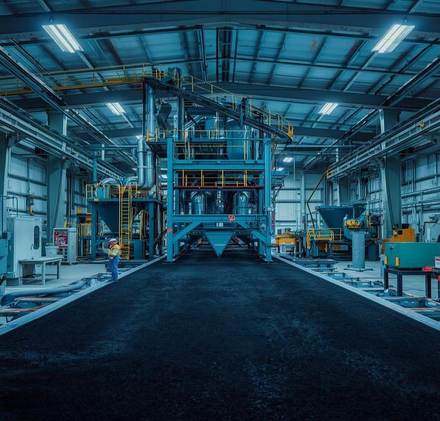
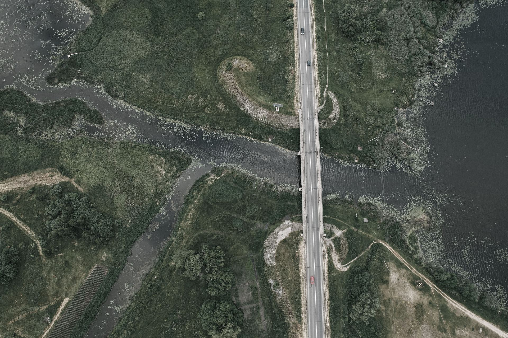
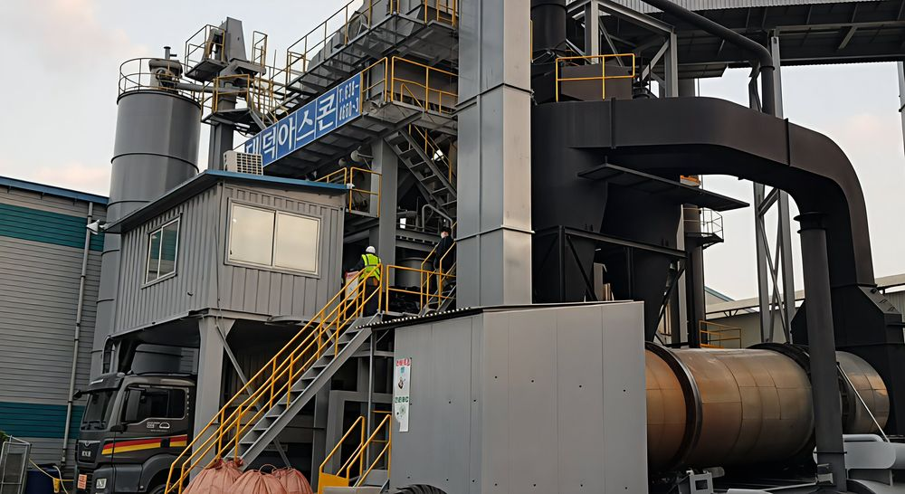

현장의 한계를 넘어, 더 오래 가는 인프라를 만든다.
빌트존은 고분자와 토목섬유 복합소재 기술을 공학적 실무와 결합시켜 도로와 토목 구조물의 성능을 발전시키는 전문 기업이다.

소재를 연구하고, 도로 인프라 문제를 해결하다.
빌트존은 아스팔트 바인더를 기반으로 현장 조건에 맞는 복합소재 시스템을 자체 개발하고 생산한다. 재료 선정부터 배합과 생산, 시공 및 장기 공용성까지 하나의 기술 체계로 연결한다.
국내에서 축적한 도로와 교량 분야의 기술은 해외 인프라 사업으로 확장되고 있다.
하이브리드 재료 기술
고분자와 아스팔트, 토목섬유를 결합해 단일 소재의 한계를 넘는다.
현장 중심 공학
현지 재료와 설비 조건에 맞춰 설계부터 시공 품질까지 관리한다.
순환형 인프라
폐자원을 고부가 건설소재로 전환해 지속 가능한 도시를 설계한다.
좋은 재료가 현장에서 좋은 성능으로 이어지다.
제품 공급에 그치지 않고, 프로젝트별 조건을 분석해 생산과 시공의 실행력을 함께 설계한다.
재료와 현장 분석
기후와 교통, 골재와 바인더, 플랜트의 조건을 파악한다.
제품과 배합 설계
요구 성능에 맞는 소재 조합과 생산 조성을 설계한다.
생산과 시공 관리
시험 생산부터 온도와 투입, 다짐 조건까지 현장에서 관리한다.
성능 확인과 관리
시험 결과와 현장 데이터를 통해 성능을 확인하고 개선한다.
현장의 모든 필요를, 준비된 기술로 조달하다.
교면방수와 포장보강, 구조물 보수를 위한 고성능 아스팔트 기술.
고성능 개질 아스팔트
현장 생산
일반 아스팔트 바인더를 현장에서 고성능 개질 바인더로 전환하는 혁신적인 개질 시스템이다.
에너지를 절감하는
교량 방수 도막
복합 고분자 개질 아스팔트 도막과 강화 토목섬유가 현장에서 일체화되는 교면방수 시스템이다.
포장과 방수를
하나로
고성능 방수 아스팔트 혼합물을 사용해 포장층 시공만으로 방수 기능과 공용성을 확보한다.
구조물의 움직임과 손상까지 대응하다.
고접착 토목섬유
보강 시스템
고강도 그리드와 반응형 토목섬유를 결합해 보강재의 접착 한계를 보완하고 반사균열을 억제한다.
연속 포장형
신축이음 시스템
대규모 굴착을 줄이고 포장 표면의 연속성을 확보해 주행성과 유지관리 효율을 높인다.
수밀성과 균열 저항을
높이는 단면보수
폴리머 모르타르와 고성능 표면보호재가 콘크리트 구조물과 일체화되어 수분과 염화물 침투를 차단한다.

기존 플랜트에서 시작하는 고성능 개질 아스팔트.
현지에서 조달한 일반 바인더를 아스콘 생산 공정에서 직접 개질해 별도의 대형 PMB 설비와 장거리 고온 운송 부담을 줄인다.
재료 기술과 현장 실행 체계를 결합해 지역별 기후와 교통 하중에 맞는 포장 성능을 구현한다.

도로에서 도시까지, 기술의 적용 범위를 넓히다.
기존 인프라와 현지 생산 기반을 활용해 실제 적용 가능한 해법을 만든다.
도로와 교량
고성능 포장과 교면방수, 포장 보강을 하나의 재료 및 시공 체계로 연결한다.

아스콘 플랜트
현지 재료와 기존 설비를 활용해 최적 배합과 생산 조건, 품질관리를 현장에 적용한다.